Lab 6 - EE 421L
Authored
by Martin Jaime,
email: jaimem5 at the UNLV students domain
October 12, 2016
Pre-lab work:
- Back-up all of your work from the lab and the course.
- Go through Cadence Tutorial 4 seen here.
- Read through the lab in its entirety before starting to work on it
Prelab Work
|
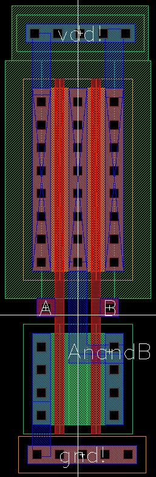
|
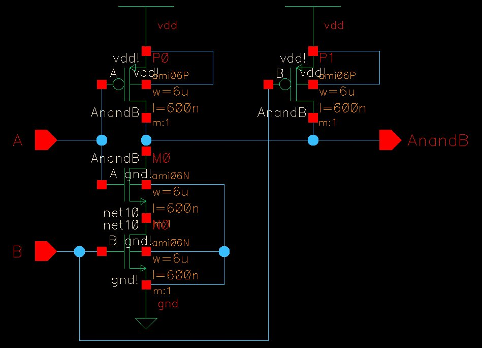 |
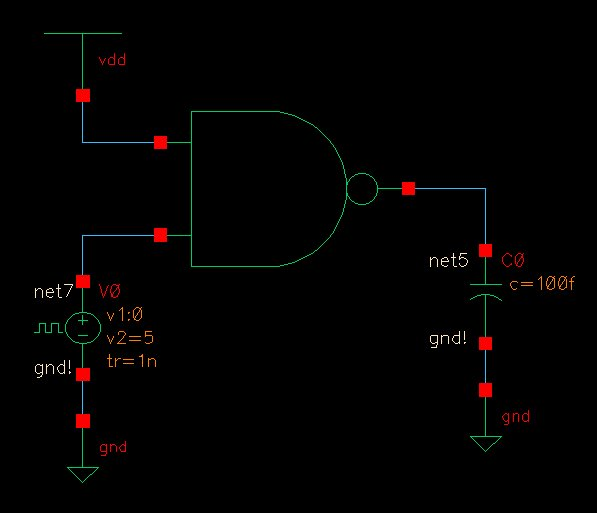
|
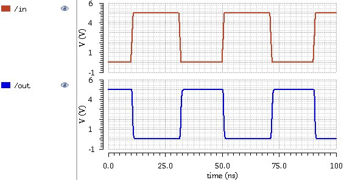
|
Lab Report
- Draft
the schematics of a 2-input NAND gate (Fig. 12.1), and a 2-input XOR
gate (Fig. 12.18) using 6u/0.6u MOSFETs (both NMOS and PMOS)
- Create layout and symbol views for these gates showing that the cells DRC and LVS without errors
- ensure
that your symbol views are the commonly used symbols (not boxes!) for
these gates with your initials in the middle of the symbol
- ensure all layouts in this lab use standard cell frames that snap together end-to-end for routing vdd! and gnd!
- use a standard cell height taller than you need for these gates so that it can be used for more complicated layouts in the future
- ensure gate inputs, outputs, vdd!, and gnd! are all routed on metal1
- Use cell names that include your initials and the current year/semester, e.g. NAND_jb_f19 (if it were fall 2019)
- Using Spectre simulate the logical operation of the gates for all 4 possible inputs (00, 01, 10, and 11)
- comment on how timing of the input pulses can cause glitches in the output of a gate
- Below
shows (click for a larger image): 1) schematic of a 2-input NAND gate,
2) schematic of a 2-input XOR gate, 3) simulation schematic, 4) example
pulse statement to generate a digital input, and 5) simulating the
operation of the gates for all 4 possible inputs.
2-input NAND Gate
- Gate layout, schematics, and simulation schematics illustrated below.
2-input XOR Gate
- Gate layout, schematics, and simulation schematics illustrated below.
XOR Layout passes DRC and LVS
|
| 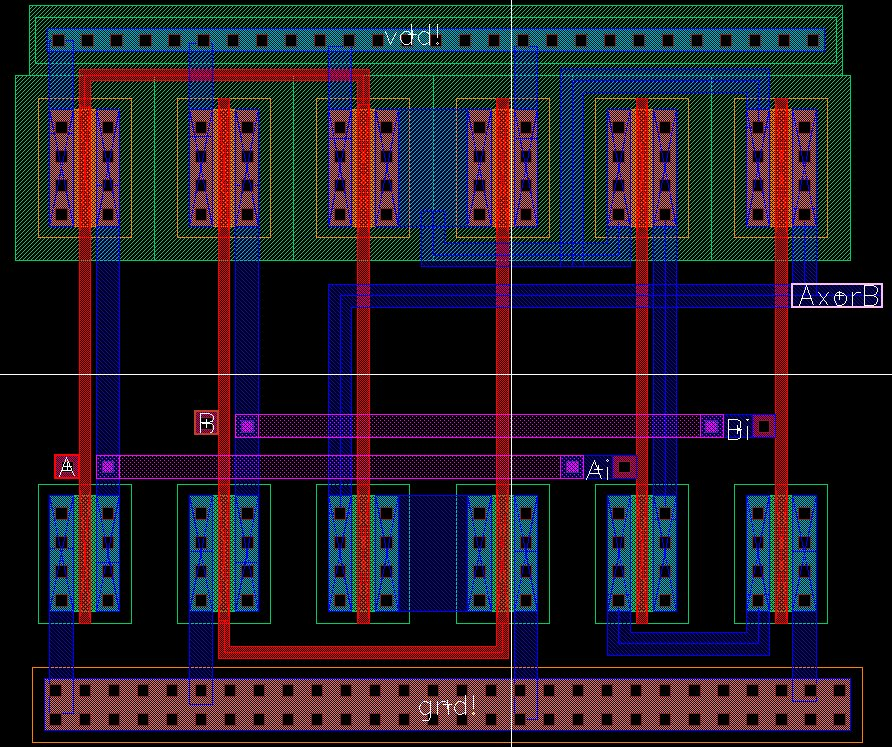 |
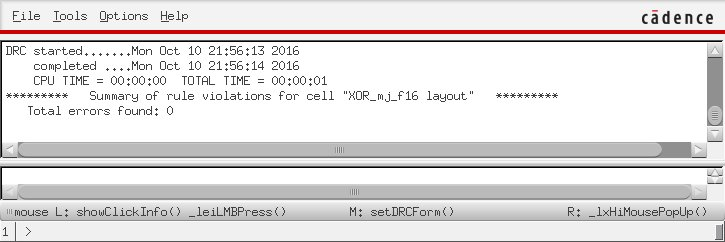
|
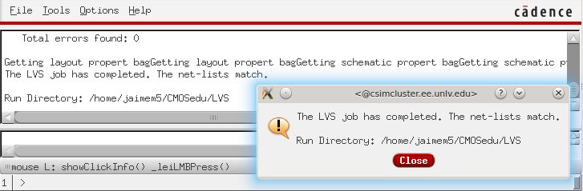
|
Simulation of the Gates
- Both gates are simulated with the following schematic.
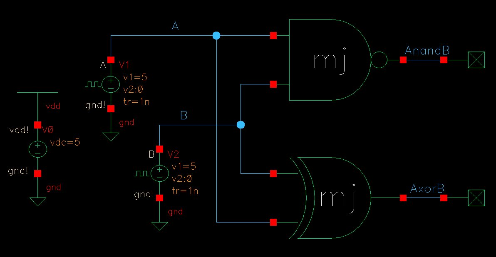
|
Simulation schematic using the NAND and XOR gate.
|
- The simulation was run using the schematics and the extracted
layouts. Both produced the same practical results with the same logic
hazards when the input signals were both switching. This is due to the
input delays throught the logic gates. The inputs ran through all
possible logic combinations from binary 0 to binary 3.
Simulation from Schematic
|
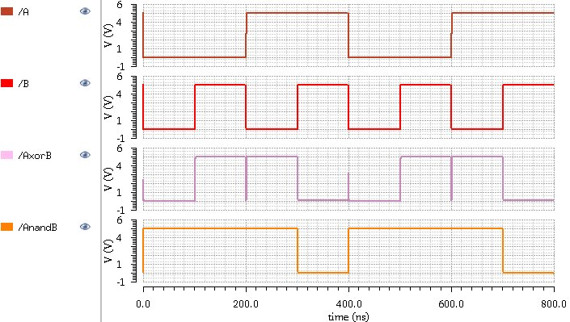
|
Simulation from Extracted
|
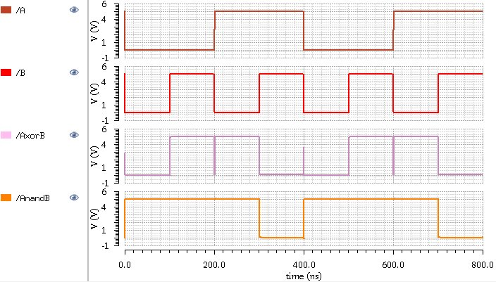
|
1-bit Full Adder Schematic, Layout, and Simulation
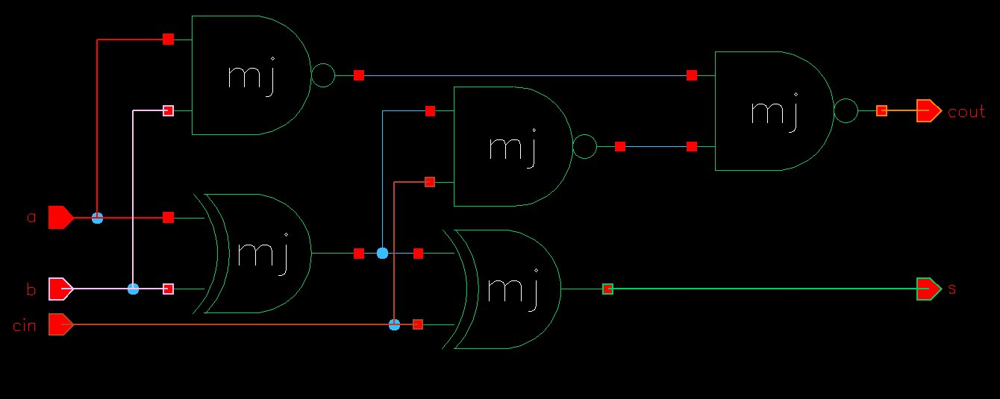
- The full adder schematic was simple to compose and simulate. Laying out the full adder posed a challenge since
the gates had to be laid in series. Individual gate cells were
flattened to have more control over their configuration. The
input/outputs of the gates had to be routed through metal 1, 2, 3, and
poly. The input output pins of the full adderremained on metal1. ptap and ntap cells were extended to cover the entirerity of the full ader cell.
Full Adder Simulation Schematic
|
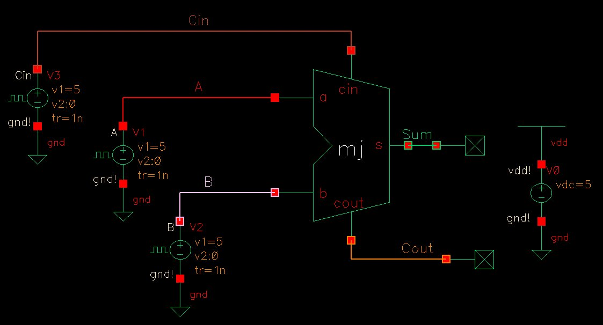
|
Simulation from Extracted
|
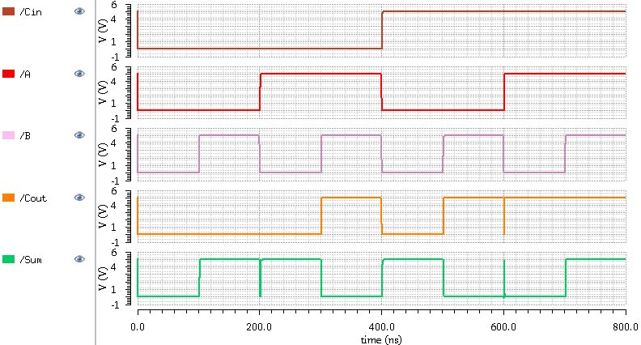
|
- Simulation results show that the sum of A, B, and Cin output as
Sum and Cout. Sum is the least significant bit, and Cout the most
significant bit. When all three inputs are 1, the output is 3 with Sum
= 1, and Cout = 1 to make up the binary number 112. The inputs cover all possible combinations from 0002 to 1112.
As seen in the simulation results, there are glitches when multiple
inputs are switching at the same time, and the output is not intended
to change such as switching from input 0012 to 0102 and when switching from 1012 to 1102. In both situations, the input is not meant to change since the sum is not meant to change.
The design files used in this lab can be downloaded here.
All backed up work can be found at https://github.com/martinjaime/CMOSedu-Reports
EE421L Lab Student Listing | My Lab Directory | EE421 Home Page